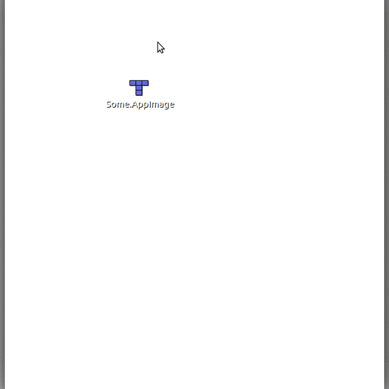

Quickstart¶
This page contains information for users new to AppImage, and want to get started.
Contents
How to run an AppImage¶
It’s quite simple to run AppImages. All you have to do is download them, make them executable and run them. This can either be done using the GUI or via the command line.
Using the GUI¶
Open your file manager and browse to the location of the AppImage
Right-click on the AppImage and click the ‘Properties’ entry
Switch to the Permissions tab and
Click the ‘Allow executing file as program’ checkbox if you are using a Nautilus-based file manager (Files, Nemo, Caja), or click the ‘Is executable’ checkbox if you are using Dolphin, or change the ‘Execute’ drop down list to ‘Anyone’ if you are using PCManFM
Close the dialog
Double-click on the AppImage file to run
Please see also the video below:
Using the Terminal¶
Open a terminal
Change to the directory containing the AppImage, e.g., using
cd <my directory>Make the AppImage executable:
chmod +x my.AppImageRun the AppImage:
./my.AppImage
That’s it! The AppImage should now be executed.
Translated versions of this guide¶
Translated versions are available in a post in the AppImage forum.
Getting help¶
If you’re new to AppImage and have problems getting up and running, please don’t hesitate to contact the AppImage team and their awesome community. They’re happy to help! Please see the Contact page for more information.